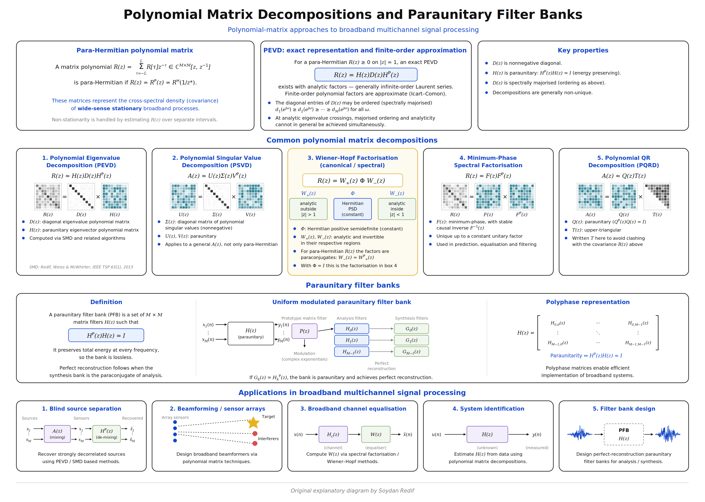

My research concerns broadband and multichannel signal processing,
with particular emphasis on polynomial matrix decompositions,
polynomial eigenvalue decomposition (PEVD), polynomial generalised
eigenvalue decomposition (PGEVD), para-Hermitian polynomial matrices,
filter banks, and convolutive blind source separation (BSS).
This page presents selected research concepts and original explanatory
figures associated with this work.
Sequential Matrix Diagonalisation (SMD) for Polynomial Eigenvalue Decomposition.
SMD was introduced by S. Redif, S. Weiss and J. G. McWhirter in
IEEE Transactions on Signal Processing, vol. 63, no. 1,
pp. 81–89, 2015. It sequentially reduces off-diagonal polynomial
energy to obtain a spectrally majorised polynomial eigenvalue
decomposition of a para-Hermitian matrix.

Polynomial matrix decompositions and paraunitary filter banks.
Polynomial-matrix approaches to broadband multichannel signal processing.